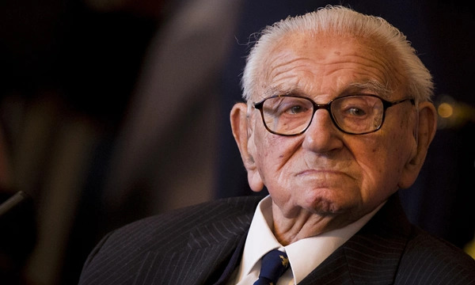

1909 – 2015 · "Oskar Schindler của nước Anh"
Người đã thầm lặng cứu 669 trẻ em khỏi Thảm họa Diệt chủng
Sir Nicholas George Winton (19/05/1909 – 01/07/2015) là một nhà môi giới chứng khoán người Anh, người đã tổ chức chiến dịch giải cứu 669 trẻ em — phần lớn là người Do Thái — khỏi Tiệp Khắc vào năm 1939, ngay trước khi Thế chiến thứ hai bùng nổ.
Ông giữ bí mật về hành động của mình suốt 50 năm. Mãi đến năm 1988, khi vợ ông là Grete tình cờ tìm thấy cuốn sổ tay ghi danh sách các em nhỏ trên gác mái, sự thật mới được hé lộ và gây chấn động toàn thế giới. Ông được truyền thông gọi là "Oskar Schindler của nước Anh".
Trong số rất nhiều nhân vật vĩ đại của nhân loại, chúng tôi chọn Winton vì một lý do đặc biệt: ông không tìm kiếm danh vọng. Ông làm việc tốt rồi lặng lẽ cất đi, để 50 năm sau thế giới mới biết. Đó là bài học quý giá về lòng nhân ái khiêm nhường mà thế hệ học sinh chúng tôi cần học hỏi.
Được cứu sống qua 8 chuyến tàu từ Praha đến London trong năm 1939.
Con cháu của những trẻ em được cứu ngày nay sống trên khắp thế giới.
Giữ bí mật về hành động của mình cho đến khi sự thật được hé lộ năm 1988.
Nếu một điều không phải là không thể, thì nhất định phải có cách để làm nó.